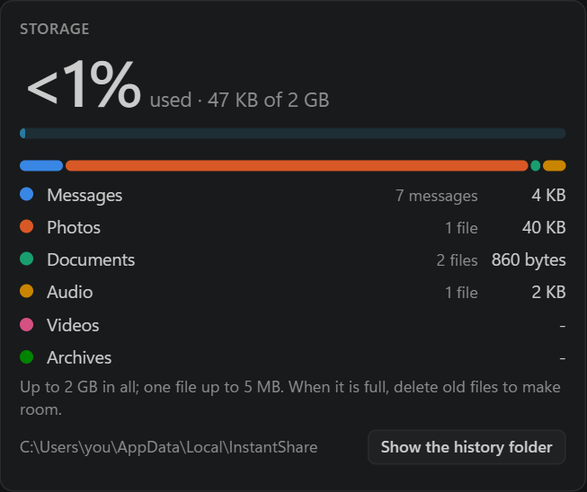
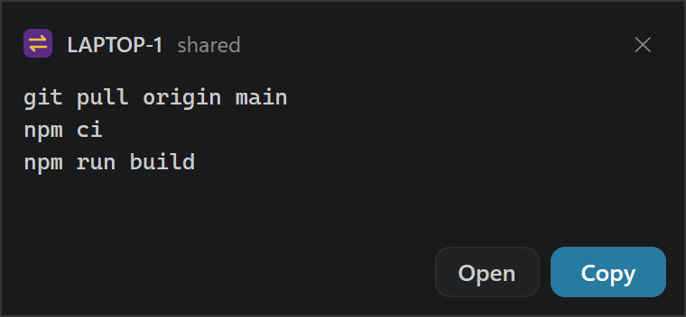

Pass text, photos, documents and voice notes between the computers and Android phones on your own network. Share on one, and the others have it at once, with a pop-up or a notification and a Copy button. Choose who sees it; pin, archive, edit. No internet, no accounts.
Version 1.1.0 · Windows 10 and 11 (64-bit) · Android 10 and newer · Published by SCAFFApps
Contents
1 What Instant Share is
2 Installing and setting up
3 The window at a glance
4 Sharing text and files
5 Who should see it
6 The history
7 Settings
8 Pop-ups by the clock
9 The Android app, and browsers
10 The tray icon and keeping it running
11 Shortcuts, options and files
12 Privacy and security
13 Troubleshooting
1. What Instant Share is
Instant Share passes things between the devices on your own network: commands, addresses, links, notes, code, a photo of a drawing, a quotation, a voice note. Anything you would otherwise e-mail to yourself, carry on a USB stick or type again.
One computer keeps the history. The other computers run the same app and connect to it, and Android phones run Instant Share for Android; they find it on the network by themselves. Anything else (an iPhone, a computer without the app) uses a browser.
LaptopInstant Share app
Android phoneInstant Share for Android
iPhone, tabletany browser
→
The computer that keeps the historyInstant Share app · answers only your own network · no internet needed
Share: write, paste or drop a file and press Enter. The other devices have it within a moment.
Be told: a pop-up by the clock on computers, a notification on Android phones, each with a Copy button.
Choose who sees it: everyone, or only the devices you tick.
Keep it tidy: pin what you need often, archive (swipe left) what you are done with, edit or delete what you shared.
What it is for, and what it is notInstant Share is for passing things between devices you own, on a network you trust: at home or in your own office. It has no password and no encryption, so it is not for public or shared Wi-Fi (section 12).
2. Installing and setting up
File
What it is
Instant-Share-1.1.0-portable.exe
The app for Windows 10 and 11 (64-bit), in one file. Nothing is installed and no administrator permission is needed: copy it anywhere and double-click it. Use the same file on every computer.
Instant-Share-1.1.0.apk
Instant Share for Android 10 and newer (section 9). Phones on the same Wi-Fi can also get it from the computer that keeps the history.
instantshare.py
Instant Share as a plain server, for Mac and Linux: python3 instantshare.py; every device then uses a browser.
"Windows protected your PC"The app is not code-signed, so Windows may show this message the first time. Choose More info, then Run anyway.
Coming from Text Share 1.0?Instant Share is its new name. Quit Text Share from its tray menu, then start Instant Share: it takes over the same history, settings and "start with Windows". On the phone, install the new app over the old one: it keeps its setup.
The first start: one question
The first start on a laptop. Instant Share has already found OFFICE-PC, the computer that keeps the history.
On one computer, one that stays on while you work, choose Use this computer. Windows asks whether to allow Instant Share on networks: allow it on Private networks.
On every other computer, choose that computer in the list, or type its name or address and press Connect.
Leave Start Instant Share when I sign in to Windows ticked, so it is always ready to show what others share.
To change it later: Settings (the gear) > Change setup, or the tray icon's menu.
3. The window at a glance
The dark appearance (the default): the editor on the left, the history on the right, with a pinned item on top.
Part
What it does
Dot and status
Green: connected to the computer that keeps the history, with the number of other devices online. Red: it cannot be reached (section 13).
This device
The name shown next to everything this device shares. Click it to change it (in Settings).
Pin
Keeps the window on top of the other programs; click again to stop (Windows app).
Sun or moon
Switches between the dark and the light appearance.
Gear
Settings (section 7).
Enter sends, Wrap long lines
Enter shares at once (Shift+Enter starts a new line); long lines fold to fit.
File, Clear, Copy
Add a file; empty the editor; copy what is in it.
To, Share
Who should see it (section 5), and Share.
History
Everything shared with this device: pinned items first, then the newest, with a search box.
The same window in the light appearance.
4. Sharing text and files
Text
Write or paste in the editor.
Press Enter, or the blue Share button. (Shift+Enter starts a new line. With Enter sends off, it is Ctrl+Enter.)
The editor empties, and the text is at the top of the history on every device that may see it.
A file
A photo added, with a line about it, ready to share with LAPTOP-1 only.
Add one file to a share: press File, drag it from File Explorer onto the editor, or paste a picture with Ctrl+V. Text in the editor goes with it, as a caption; ✕ takes the file off again.
What can be shared
In the history
Photos: PNG, JPEG, GIF, WebP, BMP, HEIC
Shown as pictures (HEIC as a file)
PDF
Opens in the PDF viewer
Word, Excel, PowerPoint (also .doc, .xls, .ppt and OpenDocument), RTF, text, CSV
Each file can be up to 5 MB; text up to 20 MB. Instant Share checks what a file really is from its contents, not its name: programs, scripts and web pages are refused, even renamed.
Photos and videos from a phone are often bigger than 5 MBShare a smaller copy: most phones can send or save a photo at a smaller size; a screenshot of it is usually well under 5 MB.
5. Who should see it
The devices Instant Share knows, with who is online now.
The To button next to Share says who will see what you share. Click it to choose:
Everyone: every device, now and later (the default).
Only some devices: tick them. The others will not see it, in the history or as a pop-up.
A green dot means the device is online: the app is running there (in its window or in the tray), or a browser has the page open. Offline devices can be ticked too; they see it when they come back.
Your choice stays for the next share, and the button shows it, for example To: LAPTOP-1. In the history, such an item shows its devices after an arrow: → LAPTOP-1.
Tidy, not lockedSharing with chosen devices keeps it out of the others' history and pop-ups. It is not a lock: someone on your network who knows how could still read it (section 12).
6. The history
OFFICE-PC's own message, changed after it was shared ("edited 18:00"), with its ⋯ menu open.
On each item
What it does
Copy
Copies the text, ready to paste. On a photo (in the apps), Copy or Copy photo copies the picture itself.
Save
Saves the file in the folder chosen in Settings (Downloads unless you change it) and shows it there.
⋯ > Pin to the top
Keeps it above everything else, under Pinned, on this device. Unpin undoes it.
⋯ > Archive
Puts it away on this device: it leaves your history (the others still have it). Undo appears for a few seconds.
⋯ > Edit
Only on what this device shared. The text comes back into the editor, under "Editing your message"; change it and press Save. Everyone sees the new text in place, marked edited with the time. Cancel leaves it as it was.
⋯ > Delete for everyone
Only on what this device shared: it disappears from every device's history (after a question).
Swipe left on a phone or touch screen to archive an item quickly.
The archive: Settings > Archived messages > Show. Swipe left there (or ⋯ > Back to the history) to bring one back; Back to the history at the top returns.
Search the history finds items by their text, their file name, or the device that shared them.
Photos open full size with a click; Show all opens a long item; new items glow briefly; Arabic and other right-to-left text reads right to left, line by line.
The history shows the newest 300 items (and every pinned one); search reaches all of them.
7. Settings
Settings on the computer that keeps the history.
The gear at the top right opens Settings:
Part
What it holds
This device
Its name, shown to the others.
Appearance
Dark or Light.
Writing
Enter sends; Wrap long lines.
This computer (Windows)
Keep the window on top of the other programs. Copy what arrives: text and photos others share go straight to the clipboard, ready to paste, without a click.
Saving files
Where Save puts files: Change… to choose a folder; Use Downloads to go back. (Apps only; browsers save their own way.)
History
Which computer keeps it, and Change setup; the archived messages; the address for phones and browsers.
Storage
How much of the history's 2 GB is used, and by what (below). On the computer that keeps it: Show the history folder.
About
The version, and Get the app.
Storage

The share of 2 GB used, then what the history holds, by kind.
The history can hold 2 GB in all. The bar shows what is in it: messages, photos, documents, audio, videos and archives, with the number of items and their size. When it is full, new shares are refused with a message: delete old files (⋯ > Delete, on what you shared) to make room.
8. Pop-ups by the clock

Text shared by LAPTOP-1 (dark appearance).A photo shared with you, and one more item (light).
When another device shares something with this computer, a small pop-up appears above the clock, with a sound, even when the Instant Share window is closed. It never takes the keyboard away from what you are doing, and it stays out of the taskbar.
In the pop-up
What it does
Copy
Text: copies all of it. Photo: copies the picture. With Copy what arrives on (Settings), it is copied already and the button says so.
Save
For any other file: saves it in the chosen folder and shows it there.
Open
Opens the Instant Share window; clicking the preview does too.
✕
Closes it. It also goes by itself after about ten seconds, but not while the mouse is over it.
No pop-up appears while the Instant Share window is in front: the history shows new items itself.
9. The Android app, and browsers
The history on a phone; the gear opens Settings.Settings on a phone, with where files are saved.
Installing it
On the phone, on the same Wi-Fi, open the address shown in Settings > Phones and browsers on a computer (for example http://OFFICE-PC:8765), open Settings there and tap Get the Android app. Or copy Instant-Share-1.1.0.apk to the phone.
Open the downloaded file and allow installing from that source when Android asks; then Install. It installs over Text Share 1.0, keeping its setup.
Open it and tap the computer that keeps the history. Allow notifications, and allow it to run in the background (Android asks both, once).
Using it
Everything works as on a computer: write, add a file, choose who sees it, share; Copy, Save, pin, archive (swipe left), edit and delete your own.
From any other app: tap Share there on a link, a text, a photo, a document or a voice note, and choose Instant Share. It lands in the editor, ready to share.
Notifications with Copy (text, photo), Save and Open (files) come with the app closed too. A small "Connected to OFFICE-PC" notice stays while it listens; tap it to hide it for good.
Documents open in the phone's own apps (a PDF reader, Word, Excel...). Save files to in Settings chooses the folder, with Android's own folder picker.
Back first closes what is open (Settings, a menu, a photo, the archive), then puts Instant Share away. It never returns to the setup.
iPhones and other browsers
They open the same address in the browser. Everything works except notifications (the page shows new items while it is open); Save downloads the browser's usual way.
10. The tray icon and keeping it running
Once set up, Instant Share keeps running in the tray, by the clock, when you close its window: the computer that keeps the history goes on serving the others, and every computer goes on showing pop-ups.
Tray icon
What it does
Click
Opens the window.
Right-click
Open Instant Share, Start with Windows (ticked when it does), Change setup… and Quit Instant Share, which really stops it.
Double-clicking the program while it is running opens the running one. Keep the window on top (the pin, or Settings) keeps the window above other programs until you turn it off; it is remembered.
Keep the computer that keeps the history awake
A computer that is asleep cannot share. On it, open Settings > System > Power & battery > Screen, sleep and hibernate and set sleep to Never when plugged in.
A new version
Quit Instant Share from the tray menu.
Start the new file. The history and the settings are kept; "Start with Windows" moves to the new file by itself.
On the computer that keeps the history, Windows may ask again to allow it on networks: allow it on Private networks.
Backing up or moving the history
The whole history, files included, is one file, history.db, in %LOCALAPPDATA%\InstantShare on the computer that keeps it (Settings > Show the history folder). To back it up or move it, quit Instant Share first, then copy the file.
11. Shortcuts, options and files
Keyboard shortcuts
Keys
What they do
Enter
Share (with Enter sends on); Shift+Enter starts a new line.
Ctrl+Enter or Ctrl+S
Share, always.
Ctrl+V in the editor
Pastes text, or adds a copied picture as the file.
Esc
Closes what is open: a question, a menu, a photo, the device list, Settings, the archive.
Options
For special cases, add these after the program's name in a command window (open the program's folder, type cmd in its address bar and press Enter):
Option
What it does
--port 9000
On the computer that keeps the history: another port than 8765. (If 8765 is taken, it picks the next free one by itself.)
--data D:\InstantShare
Keeps the history and settings in another folder, for example next to the program on a USB stick.
--hidden
Starts in the tray, without the window. Windows starts it this way at sign-in.
Where things are saved
What
Where
The history, files included
%LOCALAPPDATA%\InstantShare\history.db on the computer that keeps it.
Settings
%LOCALAPPDATA%\InstantShare\settings.json on each computer.
A log, for troubleshooting
%LOCALAPPDATA%\InstantShare\textshare.log on each computer.
Saved files
The folder chosen in Settings; Downloads unless you change it.
Pins and archive
Kept with the history, for each device.
12. Privacy and security
What Instant Share does
Stays on your network. It answers only devices on its own local network, never reaches the internet, and nothing you share leaves your network.
Keeps one copy. The history is stored on the computer that keeps it, and nowhere else.
Can't be read by websites. A website open in someone's browser cannot read or change the history.
Checks files. Only the kinds listed in section 4, by their contents, up to 5 MB. Documents are only ever downloaded, never opened as a page.
Edit and Delete belong to the sender. Only the device that shared an item can change it or delete it; pins and the archive are each device's own.
What it does not do
No password. Anyone on the same network who opens the address can use Instant Share, read what is shared with everyone, and add to it.
No encryption. It talks plain http. Someone watching your own network could see what is shared.
"Who should see it" is not a lock, and "only the sender deletes" holds for the apps and the page, not against someone with technical knowledge on your network.
No expiry. Items stay until their sender deletes them.
Use it only on networks you trustHome, or your own office network, is fine. Not public Wi-Fi, a hotel or a café, or a network shared with other companies. If you pass a password or a key through Instant Share, delete the item once you have pasted it where it belongs.
13. Troubleshooting
Problem
What to do
Setup finds no computer, or cannot connect
Check that Instant Share runs on the computer that keeps the history, and that both are on the same network.
On that computer, set the network to Private: Settings > Network & internet > Wi-Fi or Ethernet > Network profile type.
Type its numbered address instead of its name. A VPN, or a guest Wi-Fi, can hide devices from each other.
If Windows never asked to allow it, allow it yourself in an administrator command window on that computer:
The computer that keeps the history is off or asleep, or Instant Share was quit there. Start it again; the window reconnects by itself, and what you typed stays.
No pop-ups
Instant Share must be running on this computer, in its window or in the tray (click the ^ by the clock). Full-screen games and presentations may cover them.
No notifications on the phone
Allow notifications for Instant Share (the phone's Settings > Apps > Instant Share > Notifications) and set its battery use to Unrestricted. The phone must be on the same Wi-Fi.
"The history … is full (2 GB)"
Delete old files you shared (⋯ > Delete for everyone). Settings > Storage shows what takes the room.
"That kind of file can't be shared"
Only the kinds in section 4 can be shared. A program or script inside a ZIP is fine; on its own it is refused.
"Only the device that shared it can …"
Edit and Delete belong to the sender. To put someone else's item away on your device, archive it.
The program does not start, or disappears
Choose More info then Run anyway on the SmartScreen message. If your antivirus moved the file, restore it and mark it as allowed.
Something else
The log, %LOCALAPPDATA%\InstantShare\textshare.log, says what Instant Share did. Send it along when asking for help.
The top of the window when the computer that keeps the history cannot be reached.